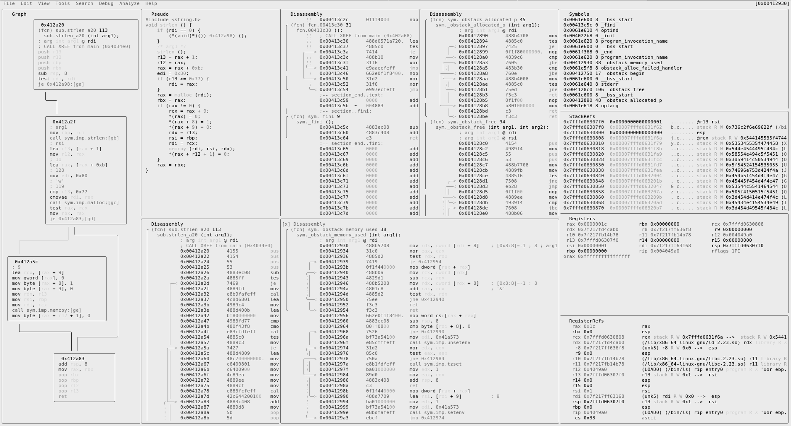

21 Visual Panels
21.1 Concept
Visual Panels is characterized by the following core functionalities:
- Split Screen
- Display multiple screens such as Symbols, Registers, Stack, as well as custom panels
- Menu will cover all those commonly used commands for you so that you don’t have to memorize any of them
CUI met some useful GUI as the menu, that is Visual Panels.
Panels can be accessed by using v or by using ! from the visual mode.
21.2 Overview

21.3 Commands
|Visual Ascii Art Panels:
| | split the current panel vertically
| - split the current panel horizontally
| : run rizin command in prompt
| ; add/remove comment
| _ start the hud input mode
| \ show the user-friendly hud
| ? show this help
| . seek to PC or entrypoint
| * show decompiler in the current panel
| " create a panel from the list and replace the current one
| / highlight the keyword
| ( toggle snow
| & toggle cache
| [1-9] follow jmp/call identified by shortcut (like ;[1])
| ' ' (space) toggle graph / panels
| tab go to the next panel
| Enter start Zoom mode
| a toggle auto update for decompiler
| b browse symbols, flags, configurations, classes, ...
| c toggle cursor
| C toggle color
| d define in the current address. Same as Vd
| D show disassembly in the current panel
| e change title and command of current panel
| f set/add filter keywords
| F remove all the filters
| g go/seek to given offset
| G go/seek to highlight
| i insert hex
| hjkl move around (left-down-up-right)
| HJKL move around (left-down-up-right) by page
| m select the menu panel
| M open new custom frame
| n/N seek next/prev function/flag/hit (scr.nkey)
| p/P rotate panel layout
| q quit, or close a tab
| Q close all the tabs and quit
| r toggle callhints/jmphints/leahints
| R randomize color palette (ecr)
| s/S step in / step over
| t/T tab prompt / close a tab
| u/U undo / redo seek
| w start Window mode
| V go to the graph mode
| xX show xrefs/refs of current function from/to data/code
| z swap current panel with the first one21.4 Basic Usage
Use tab to move around the panels until you get to the targeted panel. Then, use hjkl, just like in vim, to scroll the panel you are currently on. Use S and s to step over/in, and all the panels should be updated dynamically while you are debugging. Either in the Registers or Stack panels, you can edit the values by inserting hex. This will be explained later. While hitting tab can help you moving between panels, it is highly recommended to use m to open the menu. As usual, you can use hjkl to move around the menu and will find tons of useful stuff there. You can also press " to quickly browse through the different options View offers and change the contents of the selected panel.
21.5 Split Screen
| is for the vertical and - is for the horizontal split. You can delete any panel by pressing X.
Split panels can be resized from Window Mode, which is accessed with w.
21.6 Window Mode Commands
|Panels Window mode help:
| ? show this help
| ?? show the user-friendly hud
| Enter start Zoom mode
| c toggle cursor
| hjkl move around (left-down-up-right)
| JK resize panels vertically
| HL resize panels horizontally
| q quit Window mode21.7 Edit Values
Either in the Register or Stack panel, you can edit the values. Use c to activate cursor mode and you can move the cursor by pressing hjkl, as usual. Then, hit i, just like the insert mode of vim, to insert a value.
21.8 Tabs
Visual Panels also offer tabs to quickly access multiple forms of information easily. Press t to enter Tab Mode. All the tabs numbers will be visible in the top right corner.
By default you will have one tab and you can press t to create a new tab with the same panels and T to create a new panel from scratch.
For traversing through the tabs, you can type in the tab number while in Tab Mode.
And pressing - deletes the tab you are in.
21.9 Saving layouts
You can save your custom layout of your visual panels either by picking the option ‘Save Layout’ from the File menu of the menu bar or by running:
v= testWhere test is the name with which you’d like to save it.
You can open a saved layout by passing the name as the parameter to v:
v testMore about that can be found under v?.